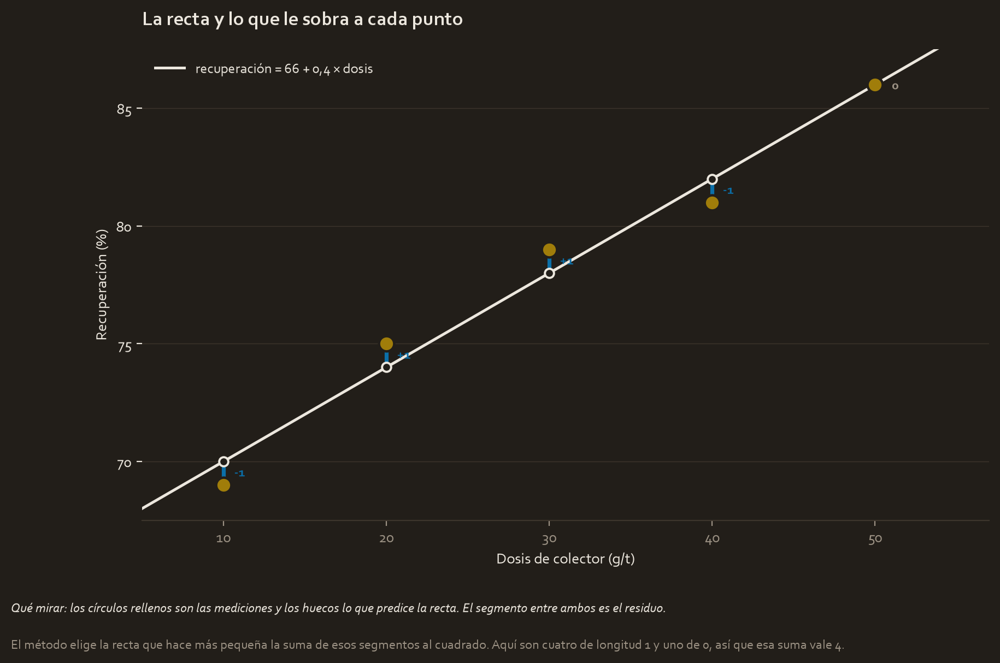

What this module solves
The previous module ended with a number, 0.9877, which says that the dose and the recovery move together and does not say how much. This module turns that relationship into an actionable sentence: for every gram per tonne, 0.4 points of recovery.
For that, a line is fitted to the points. It sounds simple, and the calculation is. What is not simple, and is where the real work is, are the three questions that come behind it: how much can I trust that 0.4?, is the line any good?, and did I even have the right to fit a line to this data?
Before the theory: a toy example
The same five values of module 1, now to build their line:
dosis (g/t) 10 20 30 40 50
recuperación (%) 69 75 79 81 86Step 1. The line passes through the centre
We already know the centre of the cloud is (30, 78), because those are the two means. The least-squares line always passes through there. So all that is missing is the tilt.
Step 2. The slope, with two numbers we already calculated
From module 1 we have the two ingredients:
suma de los productos de las distancias = 400
suma de las distancias de la dosis al cuadrado = 1000
pendiente = 400 / 1000 = 0,4And with the slope, the intercept comes out by solving from the centre:
78 = intercepto + 0,4 × 30 → intercepto = 78 − 12 = 66The line is: recovery = 66 + 0.4 × dose.
Step 3. What it predicts and by how much it is wrong
| Dose | Measured recovery | What the line predicts | Residual |
|---|---|---|---|
| 10 | 69 | 66 + 4 = 70 | −1 |
| 20 | 75 | 66 + 8 = 74 | +1 |
| 30 | 79 | 66 + 12 = 78 | +1 |
| 40 | 81 | 66 + 16 = 82 | −1 |
| 50 | 86 | 66 + 20 = 86 | 0 |
The residual is what each point has over or under relative to the line: the measured minus the predicted. Here they are four of length 1 and one of 0.

Notice that the residuals add up to exactly zero: −1 +1 +1 −1 +0. It is not a coincidence of this data, it always happens. The line shares the error out to both sides by construction, and that is why adding them up measures nothing: they have to be squared first.
Step 4. Why "least squares"
We square each residual and add:
(−1)² + (1)² + (1)² + (−1)² + 0² = 1 + 1 + 1 + 1 + 0 = 4That sum, 4, is what the method minimises. Of all the lines that could be drawn over these five points, the one with slope 0.4 and intercept 66 is the only one that leaves that sum at 4. Any other leaves it higher. Hence the name: least squares.
And why squared and not in absolute value? For two reasons. One, which we already saw: without squaring, the errors cancel out. Two: squaring punishes one large error much more than several small ones. A residual of 4 weighs 16, while four residuals of 1 weigh 4 in total. The line strives not to leave anyone very far away.
Step 5. The R², which is a comparison, not a grade
The R² answers a specific question: how much better is my line than having no line?
If we had no model, the best we could do is always predict the mean, 78. With that, the errors would be the distances to the centre we already calculated in module 1:
sin recta (prediciendo siempre 78): 81 + 9 + 1 + 9 + 64 = 164
con la recta: 4R² = 1 − 4 / 164 = 1 − 0,0244 = 0,9756Translated: the line removes 97.56% of the error we had without it. That is the R², and nothing else. In particular it is not a percentage of hits nor a grade for the model.
Step 6. How much that 0.4 can be trusted
The 0.4 came out of five points. With another five tests something similar but not identical would have come out, and it has to be said how much it can dance. It is done in three steps of arithmetic:
varianza que sobra = 4 / (5 − 2) = 1,333
dividida entre la dispersión de la dosis = 1,333 / 1000 = 0,001333
raíz cuadrada = 0,0365That 0.0365 is the standard error of the slope: how much the 0.4 would dance if we repeated the experiment. It is divided by 3 and not by 5 because the line already consumed two values, one for the slope and another for the intercept.
And with it the interval gets built, just as in the previous course but with the multiplier for three degrees of freedom, which is 3.182:
0,4 ± 3,182 × 0,0365 = 0,4 ± 0,116 → de 0,284 a 0,516The complete result is this: the recovery rises between 0.28 and 0.52 points for every gram per tonne of collector. And what matters is that that interval does not cross zero, so the effect is demonstrated, even though its size is quite imprecise with only five tests.
Glossary
- Ordinary least squares. The method of step 4: choosing the line that makes the sum of the squared residuals smallest. OLS for short, and the initials show up everywhere.
- Residual. The measured minus the predicted, for a specific point. The five of the example are −1, +1, +1, −1 and 0.
- Slope. How much Y rises per unit of X. Our 0.4. It is the result of the analysis and it is always stated with its units.
- Intercept. What the model predicts when X is zero. Our 66. It only makes sense to interpret it if zero is inside the measured range.
- Residual sum of squares. The 4 of step 4. What the method minimises.
- R². The proportion of the error the line removes relative to always predicting the mean. Our 0.9756.
- Standard error of the slope. How much the slope would vary if you repeated the experiment. Our 0.0365.
- Confidence interval of the coefficient. The range of slopes compatible with the data, from 0.284 to 0.516. If it includes zero, the effect is not demonstrated.
- p-value of the coefficient. The probability of seeing a slope this large if the true one were zero. It is the one-number version of the same thing the interval says.
- Homoscedasticity. That the size of the error does not change according to where you are on the line. The word is ugly, the idea is simple, and it is checked by looking at a drawing.
- Mean squared error. The average of the squared residuals. Its root, the RMSE, returns to the original units and that is why it is reported more.
Step by step
Step 1. Fit the line
It is what the toy example does: slope and then intercept. In practice one line of code does it, and what has to be known is what it is minimising underneath, because that is where its quirks come from. In particular, a single very distant point pulls the line with a lot of force, precisely because the errors get squared.
Step 2. Check the four assumptions
This is the step almost everyone skips and the one that makes the model defensible or not. There are four, and none is checked with a button:
| Assumption | What it requires | How it is checked |
|---|---|---|
| Linearity | That the relationship be approximately straight | Scatter plot of X against Y |
| Independence | That each observation be its own case | By thinking about how the data was taken, not with a test |
| Normality of the residuals | That the errors be bell-shaped | Histogram or quantile plot of the residuals |
| Constant variance | That the error not grow with the prediction | Residuals against predicted values: no funnel should be visible |
Three things worth fixing here:
Normality is required of the residuals, not of the data. It is the most common misunderstanding of the whole subject. The recovery can have whatever distribution it likes; what has to look like a bell is what is left over after fitting.
The plot of residuals against predicted values is the most informative of all. If a shapeless cloud comes out, fine. If a U comes out, the relationship was curved and the linearity assumption is broken. If a funnel that opens up comes out, the error grows with the prediction and the variance is not constant.
Independence breaks almost always with data over time. If you measure the same cell every hour, the measurement at 10 resembles the one at 9 for reasons that have nothing to do with your X, and the confidence intervals come out too narrow.
Step 3. Read the uncertainty of the coefficient
The slope alone is half an answer. Three things always go with it:
- Its standard error, which says how much it would dance on repeating.
- Its confidence interval, which is the defensible range.
- Its p-value, which tests the hypothesis that the true slope is zero.
All three say the same thing with a different face. The practical rule is to look at the interval: if it crosses zero, you cannot claim an effect exists, because a slope of zero is compatible with your data. And mind the opposite case, which is subtler: an interval that does not cross zero but runs from 0.28 to 0.52 confirms there is an effect and admits that you do not know its size well. That has to be said, not hidden behind the 0.4.
Step 4. Evaluate the model with more than one metric
| Metric | What it is | How it is read |
|---|---|---|
| R² | Proportion of the error removed relative to predicting the mean | No units, from 0 to 1. It serves to compare models on the same data |
| MSE | Average of the squared residuals | In squared units, so it is not interpreted directly |
| RMSE | The root of the previous one | In the units of Y, and that is why it is the one reported |
| MAE | Average of the residuals in absolute value | Also in units of Y, and less sensitive to an extreme point |
In the example, the RMSE is 0.894: the model is typically wrong by nine tenths of a point of recovery. That sentence is much more useful for deciding than an R² of 0.9756, because it is in units a metallurgist can judge.
And hence the rule: the R² serves to compare, the RMSE to decide.
Step 5. Present the result
The complete block that goes to the report, no more and no less:
- The sentence with units: for every gram per tonne, 0.4 more points of recovery.
- The interval: between 0.28 and 0.52.
- How wrong the model is: RMSE of 0.894 points.
- How much it explains: R² of 0.9756.
- How much data: five tests, which is very little.
- The assumptions checked, one by one.
- The limits: the measured range and what lies outside it.
And one thing that is never written without having earned it: "the collector causes the increase in recovery". With five tests done by varying the dose on purpose, this does get close to an experiment and the causal claim is more defensible than with observed data. With plant data collected without controlling anything, you write "is associated with".
The code, in parts
Step 1. Fit and pull out everything that is needed
linregress returns, in a single object, almost everything we have calculated by hand.
import numpy as np
from scipy import stats
dose = np.array([10, 20, 30, 40, 50])
recovery = np.array([69, 75, 79, 81, 86])
fit = stats.linregress(dose, recovery)
print(f"pendiente = {fit.slope}")
print(f"intercepto = {fit.intercept}")
print(f"R2 = {fit.rvalue ** 2:.4f}")
print(f"error estandar de la pendiente = {fit.stderr:.4f}")
print(f"p de la pendiente = {fit.pvalue:.4f}")fit.stderr- The standard error of the slope, the 0.0365 we got with three divisions and a root. It is the one used to build the interval of the next step.
fit.pvalue- The p-value of the slope, which tests whether the true one could be zero. Not to be confused with a p-value of the whole model.
fit.rvalue ** 2- It has to be squared by hand.
linregressgives the correlation, not the R², and it is a classic slip to report 0.9877 where 0.9756 should go.
pendiente = 0.4 intercepto = 66.0 R2 = 0.9756 error estandar de la pendiente = 0.0365 p de la pendiente = 0.0016
The same numbers as on paper, standard error included.
Step 2. The confidence interval of the slope
linregress does not give it ready-made, so it is assembled with the standard error and the t multiplier, exactly as in the previous course.
t_star = stats.t.ppf(0.975, df=len(dose) - 2)
low = fit.slope - t_star * fit.stderr
high = fit.slope + t_star * fit.stderr
print(f"multiplicador t = {t_star:.3f}")
print(f"IC 95% de la pendiente = [{low:.3f}, {high:.3f}]")df=len(dose) - 2- Minus 2, not minus 1. In a regression two things are estimated, the slope and the intercept, so two degrees of freedom are lost. In the previous course it was minus 1 because only the mean was estimated.
stats.t.ppf(0.975, ...)- The same 0.975 of course 3: the 5% left outside is split between the two tails, so the point that leaves 97.5% below is asked for.
fit.slope - t_star * fit.stderr- Estimate minus multiplier times error. The pattern is identical to that of any confidence interval; the only thing that changes is what is estimated.
multiplicador t = 3.182 IC 95% de la pendiente = [0.284, 0.516]
It does not cross zero, so the effect is demonstrated. And it is wide, so the exact size is not.
Step 3. Look at the residuals, which is the step everyone skips
predicted = fit.intercept + fit.slope * dose
residuals = recovery - predicted
print(f"predichos = {predicted}")
print(f"residuos = {residuals}")
print(f"suma de los residuos = {residuals.sum():.1f}")fit.intercept + fit.slope * dose- Arithmetic with a whole vector: numpy multiplies the five values by 0.4 and adds 66 to them in one go, without a loop. It is the advantage of having used
np.arrayinstead of a list. recovery - predicted- Element-by-element subtraction, again without a loop. The result is the vector of the five residuals.
residuals.sum()- It should give zero, or something like 0.0000000001 due to machine rounding. If it gives anything else, there is an error in the fit, so it serves as a check.
predichos = [70. 74. 78. 82. 86.] residuos = [-1. 1. 1. -1. 0.] suma de los residuos = 0.0
With five points the residuals are read at a glance. With five hundred they have to be drawn against the predicted values, looking for three shapes: a U, a funnel, or a point very far from the rest.
Step 4. The metrics, in units that can be judged
mse = (residuals ** 2).mean()
print(f"MSE = {mse:.2f}")
print(f"RMSE = {np.sqrt(mse):.3f}")
print(f"MAE = {np.abs(residuals).mean():.3f}")(residuals ** 2).mean()- Two chained operations on the vector: first it squares the five, then it averages. It reads from left to right.
np.sqrt(mse)- The square root returns the number to the original units. The MSE is in points of recovery squared, which means nothing to anyone; the RMSE is in points.
np.abs(residuals)- The absolute value, that is removing the sign. It is the alternative to squaring when you do not want a distant point to dominate the metric.
MSE = 0.80 RMSE = 0.894 MAE = 0.800
The sentence that goes to the report is the RMSE one: the model is wrong by about nine tenths of a point of recovery.
Step 5. Package the model in a function, with its documentation
So far everything has been loose lines. As soon as something is going to be used more than once, it goes into a function: a piece of code with a name, which you pass data to and which returns a result.
def predict_recovery(fit, dose_value: float) -> float:
"""Return the recovery the fitted line predicts for one collector dose.
The dose has to stay inside the measured range, 10 to 50 g/t: outside it the
line still returns a number, and that number means nothing.
"""
return fit.intercept + fit.slope * dose_value
print(f"a 35 g/t: {predict_recovery(fit, 35):.1f} %")
print(f"a 200 g/t: {predict_recovery(fit, 200):.1f} % <- fuera de rango, imposible")def predict_recovery(...):defstarts the definition of a function and what follows is its name. Everything indented below belongs to the function and does not run until someone calls it.fit, dose_value- The parameters: what has to be given to it so it can work. Inside the function they are ordinary names; outside they do not exist.
dose_value: float- A type annotation: it warns whoever reads that a number with decimals goes there. Python does not check it, but your editor does, and it is the convention of the project.
-> float- The same idea for what it returns: a number with decimals.
"""..."""- The docstring: the documentation of the function, in triple quotes and right below the definition. It is not just any comment; it is stored in the object itself and it is what
help(predict_recovery)shows. return- Hands the result back to whoever called. Without
return, the function calculates and delivers nothing. predict_recovery(fit, 35)- The call: the two parameters are passed in the same order in which they were defined.
a 35 g/t: 80.0 % a 200 g/t: 146.0 % <- fuera de rango, imposible
The two lines of the output teach the lesson at a stroke. At 35 g/t, inside the measured range, the model predicts a reasonable 80%. At 200 g/t it predicts a 146% recovery, which does not exist, and it does so without the slightest complaint. That is why the warning lives in the docstring: the warning has to travel with the code, not stay in the head of whoever wrote it.
And hence also the habit of reading the documentation before using someone else's function. help(stats.linregress) is what clarifies that stderr is the standard error of the slope and not that of the model, which is exactly the kind of confusion that produces a badly written report.
Watch out
- The R² is not a grade. It is the comparison against always predicting the mean. An R² of 0.97 on a curved relationship means the line is much better than nothing, not that the line is correct.
- Normality is required of the residuals, not of the data. The most repeated mistake of the module, and it leads people to transform variables that did not need transforming.
- Never extrapolate outside the measured range. With doses between 10 and 50, the model says nothing about 200 g/t. The line will give you the number all the same, and it will predict a recovery of 146%, which is impossible.
- The intercept is almost never interpreted. Our 66 would be the recovery with zero collector, and we did not even measure there. It is a mathematical anchor of the line, not a data point.
- A single extreme point pulls the line. Squared errors punish large distances heavily, so the line deviates to get closer to the odd point. You always have to look for one.
fit.rvalueis not the R². It has to be squared. Reporting 0.9877 instead of 0.9756 is a silent and frequent mistake.- The degrees of freedom are n − 2 in regression. Two parameters are estimated, not one. Using n − 1 gives intervals slightly too narrow.
- A small p does not mean a large effect. With a lot of data, an irrelevant slope comes out with a tiny p. The size is told by the slope and its interval, not by the p.
Metallurgical bridge
A simple linear regression is, literally, the calibration line you already use.
When you calibrate a grade analyser with standards of known concentration and plot the response line against concentration, you are doing least squares with the same arithmetic as this module. And the laboratory's precautions are, one by one, the assumptions:
| In the laboratory | In the module |
|---|---|
| The calibration curve only holds within its range of standards | Do not extrapolate outside the measured range |
| A calibration with a point far out of line gets rejected | An extreme value pulls the line |
| If the response curves at the high end, the range gets trimmed | Linearity assumption |
| The instrument's error grows with concentration, and gets weighted | Constant variance assumption |
| Each standard is prepared separately, not by diluting the previous one | Independence assumption |
Look at the last row, because it is the most forgotten one. If you prepare the standards by serial dilution, an error in the first one contaminates all the others, and the five measurements stop being five independent data points. In statistics that is called breaking the independence assumption; in the laboratory it is called ruining the calibration. It is the same problem with two names.
And the RMSE also has its exact equivalent: it is the precision of the method, in the same units as the analysis. An RMSE of 0.894 points of recovery is the same kind of number as a "± 0.05% Cu" on a certificate.
Review
What exactly does the least-squares method minimise, and why squared?
It minimises the sum of the residuals squared, where the residual is the measured minus the predicted for each point. In the example that sum is 4, and no other line leaves it lower. They are squared for two reasons: without doing so the positive and negative errors cancel out, since by construction they add up to zero, and besides the square penalises one large error much more than several small ones, so that the line avoids leaving points very far away. The side effect of that is that a single extreme value pulls the line with force.
A model has an R² of 0.97. Does that mean it is a good model?
Not on its own. The R² only says how much error the line removes compared with always predicting the mean, and it can be high in a misspecified model: a curved relationship fitted with a line can give 0.97 and be systematically wrong at the ends. To judge the model three more things are needed: looking at the plot of residuals against predicted values for a U or a funnel, checking the four assumptions, and reading the RMSE, which is in the units of Y and says how wrong the model is in practice.
What are the four assumptions of simple linear regression and how is each one checked?
Linearity, which is checked with the scatter plot of X against Y. Independence of the observations, which is not checked with a test but by thinking about how the data was collected, and which breaks almost always with series over time. Normality of the residuals, with a histogram or a quantile plot of the residuals, never of the original data. And constant variance, by drawing the residuals against the predicted values and checking that no funnel appears. The plot of residuals against predicted values covers two of the four on its own.
The confidence interval of a slope runs from −0.1 to 0.7. What can be claimed?
That the effect is not demonstrated, because the interval includes zero and therefore a slope of zero is compatible with the data. It cannot be claimed that no effect exists: that would be confusing absence of evidence with evidence of absence, and such a wide interval is also compatible with a slope of 0.7, which would be large. The honest thing is to say that with this data nothing can be concluded, and that the uncertainty is too high, which usually means more observations are needed.
Why is the RMSE reported if the R² is already available?
Because they measure different things and only one serves to decide. The R² has no units and compares the model against predicting the mean, so it serves to compare models on the same dataset. The RMSE is in the units of the dependent variable and says how wrong the model typically is: in the example, 0.894 points of recovery. A metallurgist can judge whether being wrong by nine tenths of a point is acceptable for their decision, and on the other hand cannot directly judge whether a 0.9756 is enough.